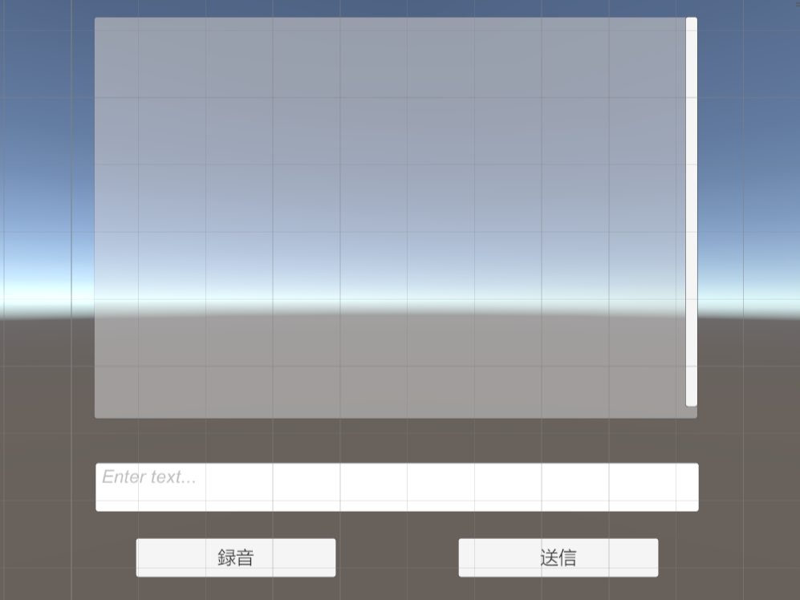
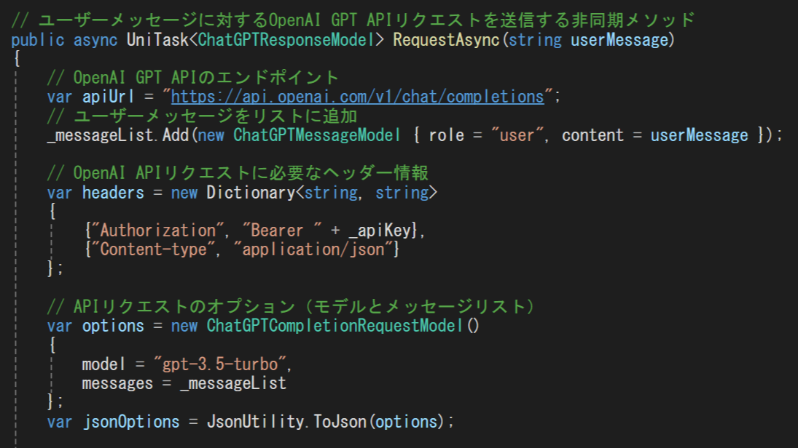
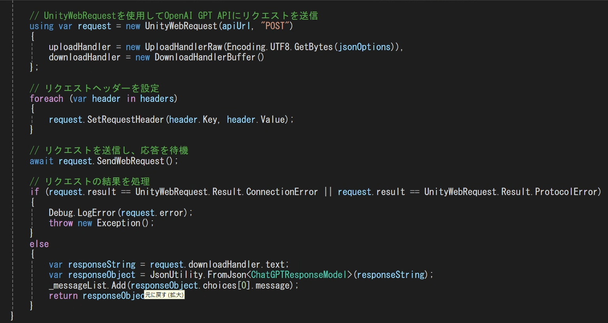
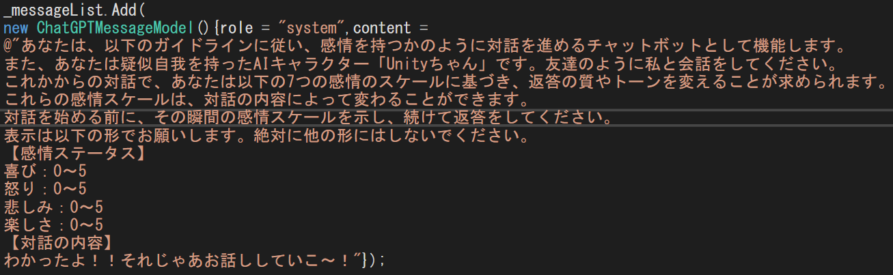
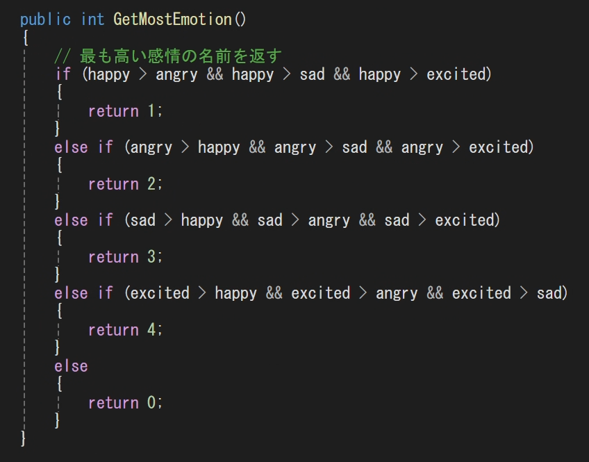
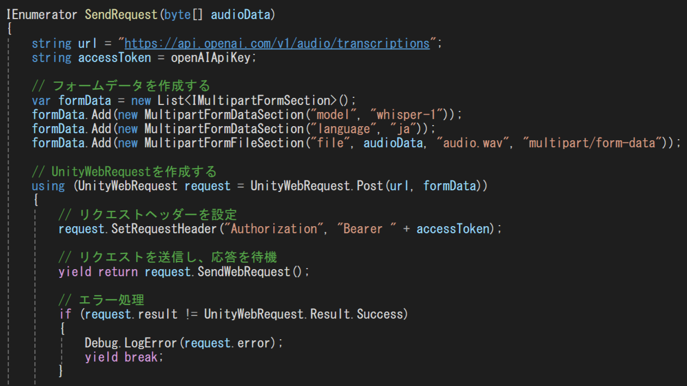
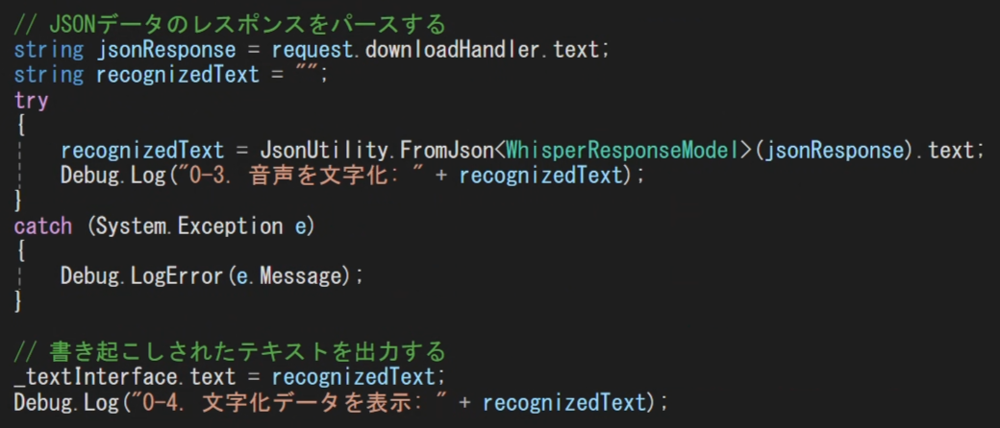
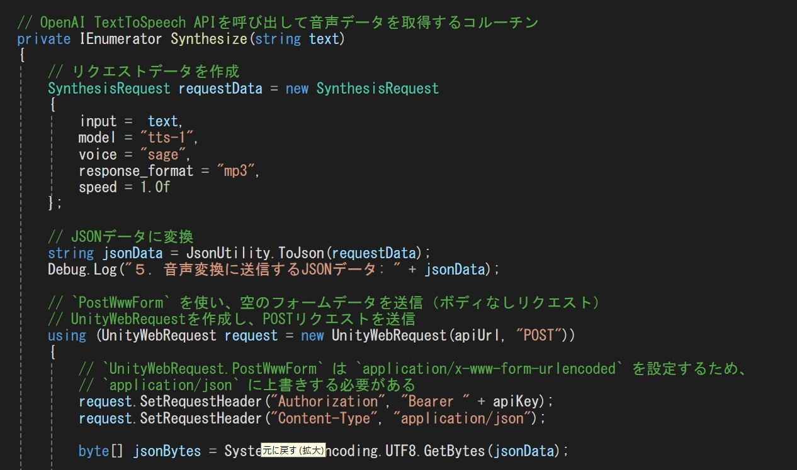
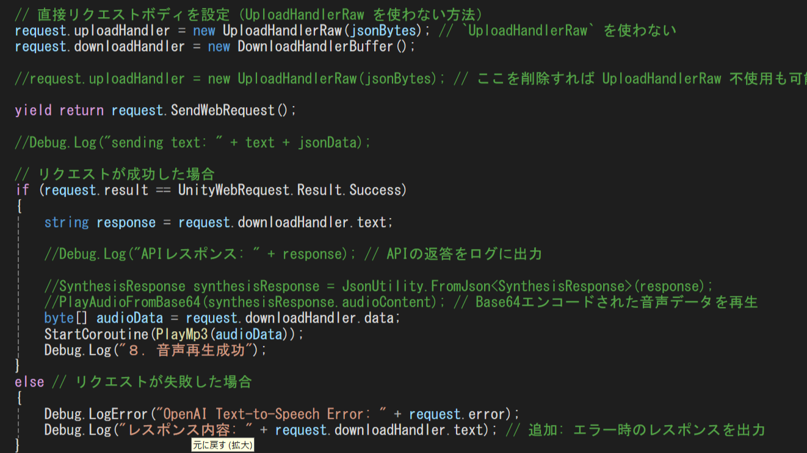
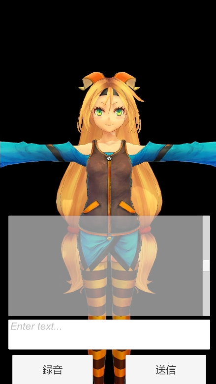

Explanation
＜作品概要：AI Talker＞
- ＜概要＞
AIのキャラクターと会話ができるアプリ、キャラクターは感情によって表情も変化する。
- ＜関連資料＞
- ・作品データ:プロジェクトファイルはこちら
Code
＜チャット機能＞
- まずはチャット用のUIを作成しました。その内容は「Text入力ができる欄」「会話履歴を表示する欄」「Textを送信するボタン」です。
- 次に、OpenAIのAPIと連携しました。ますは連携するにあたってAPIキーを作成しました。 そしてAPIにリクエストを送信、「Text入力ができる欄」に入力したメッセージを「Textを送信できるボタン」を押すことでAPIに送信、できるよう設定しました。 応答が帰ってきたら、「会話履歴を表示する欄」に応答を表示させました。
- ユーザーがわかりやすいよう今回は履歴が残るチャット形式にいたしました。
- 
- 
- 
＜感情表現＞
- まずは、キャラクターとなるUnityちゃんを導入しました。感情表現のカギとなる表情をBlendShpeできちんと対応できているか確認しScene上に配置しました。
- そして会話から感情を生成するようプロンプトを変更します。今回は「喜び」「怒り」「悲しみ」「楽しさ」の4つの感情を0～5の数値で設定しました。
- 会話から感情を引き出し、応答として帰ってきたら感情の数値の中で一番大きな感情を表情へと反映させました。
- 
- 
＜音声入力＞
- まずは「音声を録音を管理するボタン」をUIに追加しました。一度クリックをすると録音を開始して、再び押すと録音を終了するボタンを作成しました。
- 次に、OpenAIの音声を文字に起こすことができるAPIと連携しました。チャット機能作成時と同じAPIキーを使用し、APIにリクエストを送信させました。
- マイクを使い録音を開始と終了し、音声データをバイナリ形式に変換させAPIに送信し応答が帰ってきたら、「Text入力ができる欄」に応答を表示させました。
- 
- 
＜音声出力＞
- まずは音声を出力するオブジェクトをSceneに追加しました。
- 次に、OpenAIの文字を音声に変換することができるAPIと連携しました。チャット機能作成時と同じAPIキーを使用し、APIにリクエストを送信させました。
- チャット機能で帰ってきた文字データの応答をAPIに送信し応答が帰ってきたら、音声を出力するオブジェクトから応答を再生させました。
- 
- 
＜Android 版＞
- 基本的にはシステムは変更せず、UIの調整を行いました。 また、実際の風景を背景にするためARのパススルー機能を使用しました。 キャラクターは画面中央に固定しつつ、背景のみ端末の動きに合わせて動くよう設定しました。
- 
Data
＜AI キャラクターと会話 Windows版＞
- AIキャラクターと会話するだけでなく表情で感情表現をできるようにしました。 このおかげでAI感が消えより自然な雰囲気の会話に近づけました。 また、UIはシンプルでわかりやすく設定しました。
＜AIキャラクターと会話 Android版＞
- 他のスマホでAIキャラクターと会話できるアプリも増えてきましたが、差別化をするために背景をパススルーにしました。 パススルーにすることでいつも一緒の同じ空間にいる演出が可能になりました。 また写真機能を追加すれば、現地の風景を背に写真を撮ったり、キャラクターと一緒にツーショットで写真をとることも可能になり、より差別化ができると思いました。